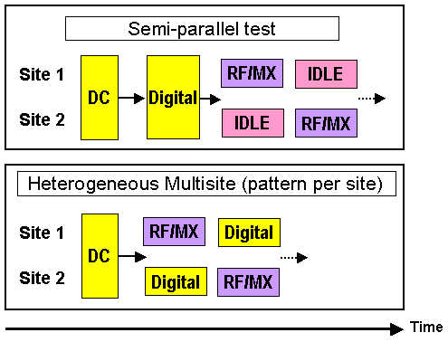

How to execute separate patterns per site (Label per site)
When you do multisite testing you may need to execute different patterns on different sites. Examples may be:
- Trimming / Fuse burn tests
- Repair tests
- Heterogeneous Multisites
- Binary set based searches
The "Pattern per Site" feature (which is also referred to as "Label per Site") allows you to execute different patterns on different sites in parallel.
Some multisite tests may require considerable resources so that the ATE tester may not have enough of them to carry out multisite tests in parallel. This may mean that you have to do semi-parallel testing which will increase the test-time overhead. An example of such tests may be complicated RF/Analog tests where upgrading the tester for parallel testing may be expensive, or where doing RF Tests in parallel on different sites influence each other.
A way to reduce the test-time overhead caused by semi-parallel test is to use the label per site feature to do different tests on different sites in parallel for example, RF/mixed signal test on site 1 in parallel with a digital test on site 2).
This concept is illustrated in the following figure.

Note that the "Label per site" feature only works correctly if the test suite flag allow parallel is set.
Note that the "Label per site" feature only works up to a site count of 256 sites.
Using site specific start labels when shared channels are present
When two sites with different start labels (start patterns) assign one and the same pin to the same channel, only one of these start labels can be executed on the shared channel. By default, this is the label that is associated with the higher numbered site. You can change this default with the assignPinToCurrentSite() member function of the PRIMARY_STATUS TM API.
Of course, defining different start labels, say "LabelA" and "LabelB", for two sites sharing a channel only makes sense if, for example, executing the waveform sequence of LabelA on the respective channel does not impair the result of LabelB on the other site, or if the result of LabelB is irrelevant in the actual context. The former requirement would be met, for instance, if both these labels define the same waveform sequence on this pin, or if at least the non-executed waveform sequence of LabelB is an initial part of the executed sequence defined by LabelA.
Note also that the Error Map makes a distinction between input and output pins in this situation. If two sites with different start labels share the channel only for an input pin, the Error Map will assume that the user knows what he is doing, and will supply results for both sites, even for the one whose start label was not executed on the shared channel. If the pin with the shared channel is an output pin, the Error Map will assume that the outcome of the label whose waveform sequence was not executed on the shared channel is irrelevant, and will only return results for the site that is by default or explicitly associated with the shared channel.
Pattern per Site feature Restrictions
There are, however, some restrictions you need to observe when using the Pattern per Site feature.
Pattern per site:
- Does not support Digital Capture per site
- Does not support Error Map mode per site
- Requires having the multiport configuration for all sites to be the same.
- Does not support Master-Clock per site (at the moment this is a shared resource).
However, with spec variables, different levels/timings can be achieved. Also, you can use the CTIM and CLEV sequencer instructions to set up different levels and timing.
Note, however, that if levels or timing are different on different sites, you must set the Site Match test flow flag to "on" otherwise the system may hang. If they are the same on all sites, this is not necessary.
- An independent sequencer start is not possible (analog sequencers can, however, be started independently).
- Protocol-aware tests cannot be executed.
Examples
Example 1
The following is an example of the structure of a test method API for performing the "Pattern per Site" feature.
Note that in the code the term "Label" is used for "Pattern".
- To select label per site, use the following TM-API, which sets up label per site within the
"FOR_EACH_SITE_BEGIN" and "FOR_EACH_SITE_END"
loop:
const STRING label[]={"label_s1","label_s2", ...}; ON_FIRST_INVOCATION_BEGIN(); Primary.label(label[0]); // Select default label for all sites FOR_EACH_SITE_BEGIN(); // Select label per site INT i = CURRENT_SITE_NUMBER() -1; Primary.assignLabelToCurrentSite(label[i]); FOR_EACH_SITE_END(); FUNCTIONAL_TEST(); // Execute label per site ON_FIRST_INVOCATION_END(); - To assign shared pins to a site, use the following TM-API that uses
assignPinToCurrentSite(…) for this
purpose:
const STRING pin[]={"pin_s1","pin_s2", ...}; const STRING label[]={"label_s1","label_s2", ...}; ON_FIRST_INVOCATION_BEGIN(); Primary.label(label[0]); // Select default label for all sites FOR_EACH_SITE_BEGIN(); // Select label and pin per site INT site = CURRENT_SITE_NUMBER() -1; Primary.assignLabelToCurrentSite(label[site]); Primary.assignPinToCurrentSite(pin[site]); FOR_EACH_SITE_END(); FUNCTIONAL_TEST(); // Execute label per site Primary.assignPinToCurrentSite(); // Restore site assignment // error if it is called outside with pins FLUSH(TM::APRM); ON_FIRST_INVOCATION_END(); - To restore the site assignment of the shared pins, the following TM-API with an empty
parameter list is called outside the FOR_EACH_SITE
loop.
Primary.assignPinToCurrentSite(); // Restore site assignment FLUSH(TM::APRM);
It is recommended that you restore the site assignment, when the test-method has finished.
To retain the ability of reusing the site assignments over several groups of test-suites, restoration of the site assignment is implemented via an extra TM-API.
Example 2: Heterogeneous multisite test
This test method example shows a situation in which an MX-Signal pin gets multiplexed via a relay located on load-board controlled by utility line pin.
- The first section of the test method prepares the setup, so that an MXSignal Test is
executed on sites 1 and 3 and a Digital Test is executed on sites 2 and
4.
static Boolean digitalResult[maxSites]; ON_FIRST_INVOCATION_BEGIN(); // // Global settings // Analog.primary("name"); // Select Analog Primary Routing.pin("dgt_pin").connect(); // Connect analog instruments Primary.label("digital_test"); // Select global label // // // Prepare tests for all sites FOR_EACH_SITE_BEGIN(); INT site = CURRENT_SITE_NUMBER() - 1; if (site == 0 || site == 2) // Analog Setting for site 1 & 3 { Routing.util("relay_1").on(); // switch load board relay to site 1 & site 3 Primary.assignLabelToCurrentSite("mx_test"); // assign label used for HW-Trigger Primary.assignPinToCurrentSite("TrigPin"); // assign trigger pin } else // Digital setting for the other sites { Primary.assignLabelToCurrentSite("digital_test"); } FOR_EACH_SITE_END(); ... ... - The next test method section executes the prepared test for site 1 and 3.
- It enables the HW-Trigger
- It sets the result Handle for Hidden Analog upload used in SmartCalc
- It executes the Heterogeneous Test
Analog.requestResultHandle("handleSite_1_3"); // Select Result Handle for SmartCalc DGT("dgt_pin").enable(); // Enable HW-Trigger SMC_EXECUTE_TEST(); // Execute Test DGT("dgt_pin").disable(); // Disable digitizer pin - This part shows the result handling for the first part of this
test.
... ... FOR_EACH_SITE_BEGIN(); // Result Handling INT site = CURRENT_SITE_NUMBER() - 1; if (site == 0 || site == 2) { SMC_ARM("handleSite1_3"); // Pass result handle to SmartCalc } else { digitalResult[site] = GET_FUNCTIONAL_RESULT(); // Store Functional Test Result } FOR_EACH_SITE_END(); ... ... - This part prepares the second part of this
test.
... ... // // Prepare test for all sites // FOR_EACH_SITE_BEGIN(); INT site = CURRENT_SITE_NUMBER() - 1; if (site == 1 || site == 3) { Routing.util("relay_1").off(); // Switch loadboard relay to site 2 & site 4 Primary.assignLabelToCurrentSite("mx_test"); // Assign label used for HW-Trigger Primary.assignPinToCurrentSite("TrigPin"); // Assign trigger pin } else { Primary.assignLabelToCurrentSite("digital_test"); } FOR_EACH_SITE_END(); ... ... - This part executes the prepared test for site 2 and 4.
- it enables the HW-Trigger
- it sets the result Handle for Hidden Analog upload used in SmartCalc
- it executes the Heterogeneous Test
Analog.requestResultHandle("handleSite_2_4"); // Select Result Handle for SmartCalc DGT("dgt_pin").enable(); // Enable HW-Trigger SMC_EXECUTE_TEST(); // Execute Test DGT("dgt_pin").disable(); // Disable HW-Trigger - This part shows the result handling for the second part of this
test.
... ...FOR_EACH_SITE_BEGIN(); // Result Handling INT site = CURRENT_SITE_NUMBER() - 1; if (site == 1 || site == 3) { SMC_ARM("handleSite2_4"); // Pass result handle to SmartCalc } else { digitalResult[site] = GET_FUNCTIONAL_RESULT(); // Store Functional Test Result } FOR_EACH_SITE_END(); - The final part does the following:
- It disconnect the analog instruments
- It outputs the functional test results
... ... Routing.pin("dgt_pin").disconnect(); ON_FIRST_INVOCATION_END(); INT site = CURRENT_SITE_NUMBER() -1; if (digitalResult[site]) { cout << "Digital Result: Pass"<< endl; } else { cout << "Digital Result: Fail"<<endl; }
Note:
1. The above example uses SmartCalc to keep the structures simple and to hide the upload and calculations. However, you can do a hidden upload and hidden calculation without SmartCalc along the following lines:
- Use
DGT().getWaveform(...)+ Calculation inFOR_EACH_SITEloops - Use static variables to store results
- Do data logging outside of
ON_FIRST_INVOCATIONblock
2. If the digital test is longer than the Analog test, you can hide the upload &
calculation by using START_TEST + WAIT_TEST_DONE as
follows:
Analog.requestResultHandle("handleSite_1_3"); // Select Result Handle for SmartCalc
DGT("dgt_pin").enable(); // Enable HW-Trigger
START_TEST(); // Execute Test
WAIT_TEST_DONE(TM::WAIT_DGT); // Wait until MX Test is finished
DGT("dgt_pin").disable(); // Disable HW-Trigger
FOR_EACH_SITE_BEGIN(); // Result Handling for MX, while digital test is running
INT site = CURRENT_SITE_NUMBER() - 1;
if (site == 0 || site == 2)
{
... // Upload Analog and calculate analog results
}
FOR_EACH_SITE_END();
WAIT_TEST_DONE(TM::WAIT_DIGITAL); // Wait until digital test is finished
FOR_EACH_SITE_BEGIN(); // Result Handling for digital
INT site = CURRENT_SITE_NUMBER() - 1;
if (site == 0 || site == 2)
{
digitalResult[site] = GET_FUNCTIONAL_RESULT(); // Store Functional Test Result
}
FOR_EACH_SITE_END();Functional changes
- Introduced in SmarTest 6.5.3